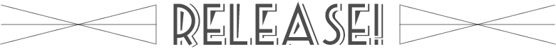

↓
scroll down

Event
2014.02.21(fri)
「washing life one」発売記念ライブ
@Ikebukuro Adm
open 19:00/start 19:30
adv ¥2,300/door ¥2,800
w/関谷謙太郎/tape me wonder
¥1000(tax included)
- 1.砂は舞う
- 2.ヤギの手紙
- 3.抵抗の目印
- 4.antenna
- 5.夜の歌
- 6.ab
2014.03.29(sat)
「washing life two」発売記念ライブ
@Shibuya 7th floor
open 18:30/start 19:00
adv ¥2,300/door ¥2,800
w/カモレ/the coopeez

1000yen(zeikomi)
- 1.サイクリン
- 2.シークレットラック
- 3.rococo
- 4.ねずのばん
- 5.ostrich policy
- 6.please!!
チケットのお取り置きはお問い合わせフォームよりお願いします。
And New PV!
first pv"ヤギの手紙"（washing life one 収録曲）
second pv"サイクリン（washing life two 収録曲）